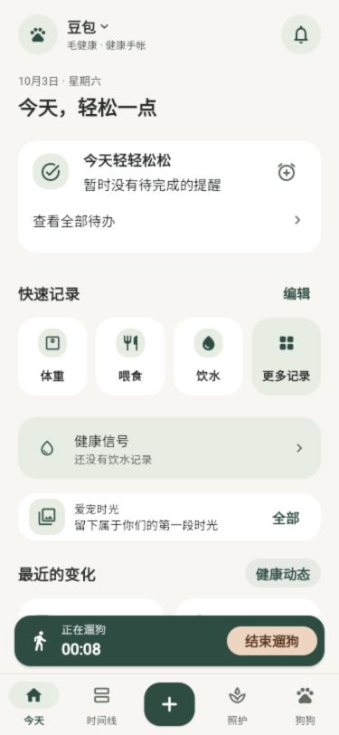
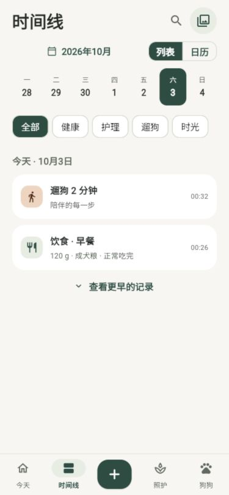
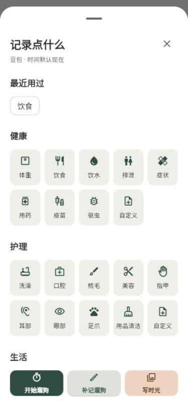
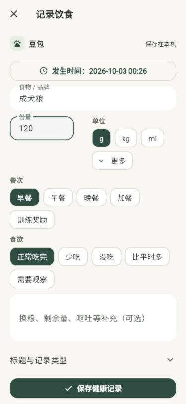
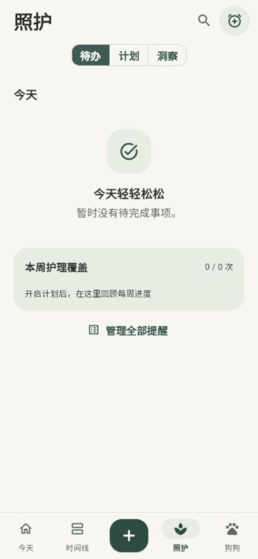
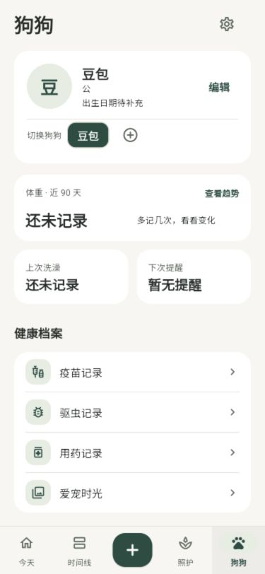

今天
今日待办、四格快捷记录、健康信号、一条时光；遛狗计时条跨页可用。
时间线
真实健康、护理、遛狗、时光混排，支持列表 / 日历与分类筛选。
＋ 记录中心
最近用过与健康 / 护理 / 生活分组，一次选择后直接进入表单。
全屏记录
当前狗狗、发生时间、数值、观察选项；固定保存栏，支持撤销新增。
照护
待办 / 计划 / 洞察，护理执行与提醒集中在同一入口。
狗狗档案
当前档案、切换狗狗、真实体重趋势、健康档案；设置位于右上角。